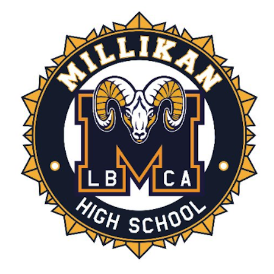

t="_blank"
The high school that I want to attend to is Millikan High School. I want to be a part of their QUEST program so that I get ahead in my high school career and get into a great college. This program is geared towards students who want to be in accelerated classes but don’t quite know what they want to do for a living.

I’m not sure what college I want to go to but I would like to apply to an Ivy League, Stanford, or a UC school. I will put my best effort into all of my work in high school for all four years in order to achieve this.
My interests for my career later in life is to be a lawyer or do some type of job with debating. Proving my point is very fun for me and observing other people’s point of view also sparks my interest.
In the future, I would like to get through college with a great GPA. I have had all accelerated classes with a 4.0 all through middle school and I want to keep at least a 3.6 in high school. Although keeping a 4.0 through all of high school would be nice, it’s not realistic, but I will try my best on all of my work.